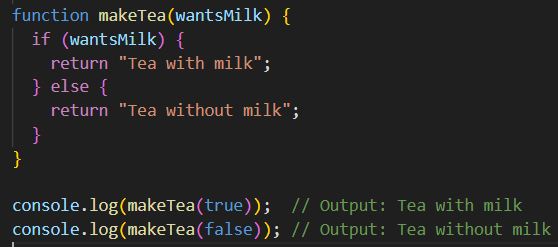
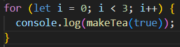
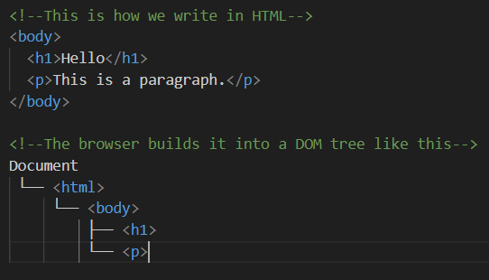
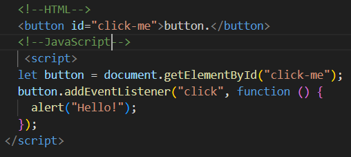
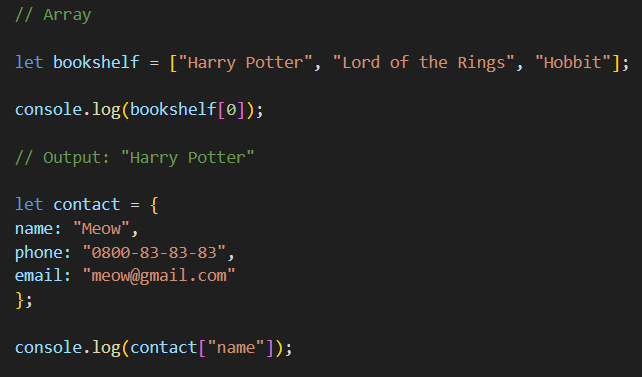
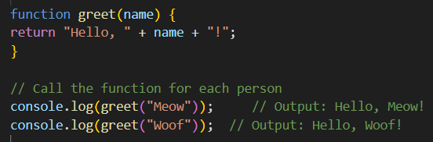

JavaScript and its relationship to HTML and CSS.
At first when I saw Javascript commands like "DOM", "loops", "functions", "arrays". I felt like the sole survivor of a zombie apocalypse coming out of hiding, stepping back into the world I once knew. When I saw examples of JavaScript commands I was like 'what is all this?'. Now after a lot of hard work, practice, research, doing quizzes and free code camp etc, I'm still like 'what is all this?'. Just joking I'll break it down for you. If you think of HTML as a structure for your house walls, rooms, windows giving the website it's shape and CSS is like wallpaper/paint, furniture and decorations making your house aesthetics and lively. Without JavaScript, HTML would be more of a static page but with JavaScript you can power the page such as electricity, which allows it to respond to clicks, scrolls, buttons, forms, etc. Much like creating a remote control such as a button styled with a CSS class to trun on a light. JavaScript allows you to make your site functional with interactive features.
Control Flow and Loops
Control flow is essentially the chronological order of set intructions which runs from top to bottom unless you use a loop to dirsupt it. Below is my control flow code for a function to make tea with or without milk the outcome is dependant on what the user decides, tea with milk or tea without milk!

You can use a loop command on your control flow to loop the entire process again which is handy for situations if I wanted to make tea with milk for 3 people I could loop my control flow using the code below. Using a loop I can repeat the process as many times as I'd like or I can even loop it to stop at a certain step or even loop it skip a certain step and continue.

Borders much like it's name is just a frame surrounding your content to make it stand out. Similar to having a frame around a photo or poster. Your frame could thick or thin, solid or dashed, even straight or curved edged. You can make them however you want, different colored borders with different colored backgrounds.
What is the DOM?
The DOM stands for Document Object Model. Imagine the DOM like family tree and your elements (like head, body, h1, p, img) these are the nodes of the tree. Using the DOM you can interact with and change structure, content and style of your page whilst open in a browser.

We can interact with it by giving one of your HTML elements an ID or using a preset ID, we can create a variable using a 'let' command and assign it to 'getElementById'. This will create a link between our Id and our new JavaScript command. Below I have an exmaple of a button that uses a variable to find my HTML element by Id and It also has an event listner command which tells the browser to listen to activity such as a click, keypress, mouse-movement. My one has an alert so that it will have a pop-up message saying 'Hello!' when you click on the

Difference between accessing data from Arrays and Objects
Arrays and Objects are two different methods of storing data. Using an array we can store data in an arranged order similar to books in a library stored in order of the subject the books fall under. To access data from an array you console.log the variable by the positioned number of what you're searching for and surprisingly the order starts from '0'. Objects are like contact list on your phone where you would have the name, phone number, email saved. You can access object data by using console.log on a variable key that you've assigned such as 'name'. Below shows my example of an Array and Object!

What are Functions and why are they helpful?
A function is a block of code to which you can assign a name and a task to perform. Think of it like a recipe, you define what it should do once, and then you can resuse it whenever without having to rewrite the code. It's good for grouping things, similar to looping you can get the function to perform the same task to different things. Functions make code more neat and easier to read and convenient for debugging. Below I have a function named greet which returns with 'Hello' and '!' when called upon and logged.
